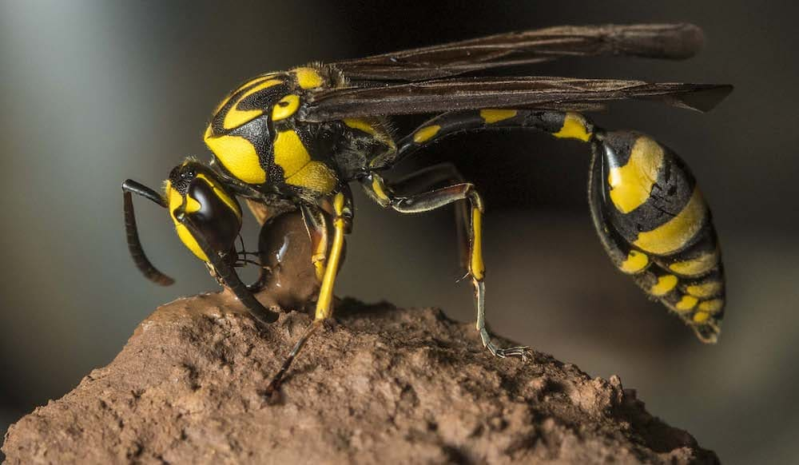

Nature's Evil Bees (Most of them)

Wasps are insects of the order Hymenoptera, closely related to bees and ants. Unlike bees, most wasps are predatory. Unlike bees, they can sting multiple times without dying. There are over 30,000 identified species of wasps worldwide, ranging from chill solitary hunters to mega colony, ultra-aggressive species.
Wasps play a critical role in ecosystems. They control pest populations, pollinate flowers, and serve as prey for birds and other animals. Knowing which species is which can help you understand if the wasps are friendly or evil.
Below are five of the most well-known wasp species, ranked roughly from most to least aggressive.
Heres a quick reference for how agressive the species your dealing with are (created by AI)
| Species | Aggression | Sting Pain | Social / Solitary |
|---|---|---|---|
| Yellow Jacket | 🔴 Very High | Moderate–High | Social |
| Bald-Faced Hornet | 🔴 Very High | High | Social |
| European Hornet | 🟠 Moderate–High | High | Social |
| Paper Wasp | 🟡 Moderate | Moderate | Social |
| Cicada Killer | 🟢 Very Low | High (if it occurs) | Solitary |
| Mud Dauber | 🟢 Minimal | Low | Solitary |
Colonial wasp species are aggressive primarily because they have something worth defending: a queen, thousands of larvae, and food stores. Anything perceived as a threat to the nest triggers pheromone-based alarm signals that rapidly recruit nearby workers to attack. In late summer and fall, colony stress peaks — the queen stops laying, food sources shrink, and workers become erratic and defensive even away from the nest.
Solitary wasps, by contrast, have no colony to defend. A cicada killer or mud dauber has no incentive to sting you — it would just fly away and rebuild elsewhere.
These videos always facinate me
This is a visualization on where yellow jacket species Vespula vulgaris can be found. (Number of dots not necessarily representative of local populations, just sightings)
You are helping someone get rid of wasps in their backyard.
Remove the yellow jackets and paper wasps, but don't hurt the mud daubers!
Controls: AWSD to move, m to shovel